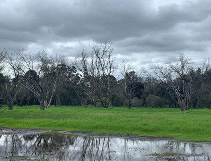

A case study on the Helena River
Background
The degradation of freshwater systems by increasing salinity is a major challenge facing Western Australia. Salinisation of the Avon river, which enters the Upper Swan river at Walyunga National Park, arose due to poor land-management leading to secondary salinity in the inland wheatbelt catchments. Whilst secondary salinity is not an issue in the Swan Coastal Plain where our study site is, the salt loads from the Avon in addition to rising sea levels and decreasing rainfall trend have been driving changes in the seasonal movement of marine waters, with increasing penetration of the salt wedge further inland from the ocean (Huang et al. 2018).
The City of Swan has identified our focus site as an area of concern due to the decline of Eucalyptus rudis. Your site assessment report will give context to the investigation and summarise your findings and observations for use by their Environmental Management team. You will use this information to develop a conceptual model of the site hydrology.
Learning Objectives
This assessment requires students to understand how hydrologic monitoring of surface- and ground-water systems can help us build a conceptual understanding of how ecosystems are working, and to link this to management challenges that require a solution. The data being analysed will help us understand the drivers of decline of E. rudis in relation to the changing hydrology regime at the Guildford floodplains along the Helena river. This site is part of a long-term research investigation being undertaken with the WA Department of Biodiversity, Conservation and Attractions (DBCA) and UWA and your data will contribute to our database.
During this assessment you will describe the site by considering hydrologic pathways (surface and sub-surface), and present data to describe the pattern of water and salt distribution in this floodplain system.
Specifcally you will:
- Identify the surface water flow regime.
- Observe soils and their hydraulic properties.
- Undertake salinity data collection from groundwater wells (piezometers) and surface waters, and from soils within the tree root zone.
- Conceptualise the hydrologic processes influencing salt movement and accumulation across the site
- Identify the distressed and dead trees and consider how hydrology may or may not be abel to explain this issue

Figure 13: High-resolution LIDAR image of the surface topography of the Helena River study site in Guildford. The red-circles indicate groundwater observation wells.
0.0.1 Vegetation changes
Salinisation of river systems can cause shifts in floodplain vegetation which arise because of river water interaction with the floodplain. Depending on the salinity increase and the salt tolerance of the floodplain tree species, this can cause shifts in community structure. One important species that has a natural range along the Swan river and its tributaries is the Eucalyptus rudis. This species has been reported to be in decline for over 15 years along the Swan river (Clay & Majer 2001), and more recently along one of the tributaries of the Swan river: the Guildford floodplains of the Helena river (Dundas 2011). It is currently unknown the exact role of water availability and salinity in the observed decline, and alternate hypothesis related to tree pathogens (e.g. Phytophthora) are also as drivers of decline are also under investigation.
E. rudis plays a vital role in the riparian ecosystem. Riparian woodland species are important filters that reduce nutrient transfers from the land into the river, which is a significant issue in the Swan river and its tributaries (excessive nutrients have historically resulted in noxious algal blooms). There is therefore a need to better understand what drives decline and if projected drying conditions for the region will make the pressures worse.
Learn about the site by reviewing prior analyses that have been undertaken and looking at a historical investigation of the site. Make a summary of the past investigations by reading through the recent report on the site:

0.0.2
Aerial imagery: Nearmap : http://maps.au.nearmap.com (login via UWA library/onesearch - see this webpage for details). Once you have successfully logged into near map you can use the time- split feature to show changes over time!
Investigating salinity by mapping EC in QGIS
Previously, many surface water samples from across the site were analysed for salinity. Let’s create a map to visualise the variation in EC over the study site. We will need QGIS for this exercise, if you don’t already have it installed on your computer you can download it here.
Let’s start by importing our EC point data. Go to Layer -> Add Layer -> Add Delimited Text Layer.
Under File name navigate to your csv of the EC data
- Make sure under File Format ‘CSV’ is selected
- Under Geometry Definition set the X field to the Easting column of you EC data and the Y field to the Northing column
- Set the Geometry CRS to “EPSG:32750 - WGS84/UTM zone 50S”
- Click Add

Figure 14: Importing your EC data.

You’ll now see the point data added to your screen, however, we have no spatial context - let’s add a basemap.
Go to the QuickMapServices (QMS) button in the toolbar and browse/search for a basemap that you think would be appropriate (e.g. search “satellite” and browse the different satellite basemap providers).
Add one to the map.

Figure 15: The QMS buttons in the QGIS toolbar.
Now we have a basemap and our points - let’s change the symbology of the points to better communicate the variation in EC.
- Right click on the point data in the layer window and go Properties -> Symbology.
- Set the symbol type to Graduated and specifying the values to graduate by as our EC column.
- Now set the Method to Size, and the Mode to Natural Breaks (Jenks), click Classify.

Figure 16: Changing the symbology of our point data.
Now when you click Apply the point size is weighted to the EC. You can further refine your symbology by changing the point colours and size - think about how best to communicate variation in EC.
- Finally, create a map output by clicking the New Layout button in the toolbar. If you aren’t familiar with creating maps in QGIS work with one of your classmates who is, or read through the second half of this tutorial.

Figure 17: Example map from your QGIS output.
0.0.3 Assessing groundwater levels and salinity
You are provided with a series of .csv files that summarise the timeseries data collected by UWA and DWER (via WIR). This includes:
• Baro: This was a UWA logger measuring atmospheric pressure, in kPa. We measure this as the water levels in the piezometers may vary due to atmospheric pressure fluctatations. For your report you do not need to present this, just bear in mind it was used to correct the piezometer water level data.
• Level: This includes the UWA piezometer level data (converted into mAHD) for HW1, HW2, and HW3. Bore 7 is also included which is denoted as Jeremy on the map. Column G River Corrected is the water level of Helena River where we did Task B – under the Bridge. So you can think of this as the water level at the river-end of the piezometer transect.
• Salinity: This has the UWA salinity measurements from inside the Piezometers (and occasional river samples). These data are in mS/cm, and you can compare our class measurements to these.
• MSB and PoisonLease: This includes the WIR data from two measurement points; “MSB” (in the main Swan River, to the west of our site) and “Poison Lease” (upstream in Helena River to the east of our site). Note that Column E has the discharge (Q) at this site, based on the above rating curve.
• MSB levels: This has the same MSB data as above, but includes the daily min and mix, show the tidal amplitude of the Swan River over time.
• Rain: This has daily rainfall data from the nearby DPIRD South-Perth weather station.
• SwanRiver Vitox Salinity: This has data from the WIR website for the “Vitox” location which is just to the west of our site (on the other side of Kings Meadow Oval). This data indicates the river/estuary salinity and would be similar to the salinity of the surface water in Helena River near our site also. Note its seasonality, compared to the groundwater.
However, for the samples we measured in TASK C and TASK D the data is relative to Ground Level. We must therefore correct the measurements to be consistent with AHD so it can be compared with the prior data and WIR data. To do this we need to know the ground level elevation at the measurement point, in mAHD.
0.0.4 Conceptualising Surface-Groundwater interaction
Now that you have measured data, the next step is to develop your conceptual model of surface water - groundwater interaction. When trying to make sense of all this data from different locations and time periods some guiding questions can help focus your analyses:
• How does salinity vary across the surface water sites? How does this relate to sources of water (Helen River, Stormwater from nearby suburbs, Swan estuary, Rain)
• How does salinity vary in the groundwater based on distance from the river?
• Do these patterns in groundwater salinity change seasonally?
• Which flow pathways drive the changes we see? Is water moving vertically or laterally? Consider how water levels in the piezometers vary relative to surface water. Think here Darcy’s Law and Hydraulic gradient.
• Are is the unsaturated zone (vadose zone) adequate for the tree roots? Ie is the water table depth deep enough to contain non-salty soil moisture for them, or must they rely on water from salty groundwater? Look here at areas in nearmap where tree loss has occurred.
• What are the salinity tolerances reported for E. rudis, based on lab/field trials? And how does our data compare to sort of data (historical and our class data).
Submission
Site Assessment report (12 marks): - Note: the Site Assessment report is due to be uploaded by xxxx see LMS
Introduction [1 page maximum] • - Background and context – why are we interested in this site? • - Map of site – where specifically are we looking at? • - Scope of the investigation – what is this report about? Assessment methodology [1 page : be concise!] • - Desktop assessment, historical data sources – external data/info we referred to • - Data analysis approach, as relevant – any processing or “higher” analysis we did to the data Results and findings [3 pages max] • - Map of surface water salinity – refer to workbook • - Time-series graphs of water levels, flows and salinities (or EC) • - Conceptual model of surface and groundwater flow and salt pathways; consider all information in this, including past data and reports and nearmap imagery. Consider how summer may be different to winter! Discussion and conclusions [<1 page] • - Interpretation of the above data in light of the observed tree-decline locations • - Suggestions for improved monitoring and further investigations; dot-points OK here.
Please refer to the marking rubric at the end of this attachment. The report will be assessed according to : - Scientific content - The quality of Tables, Charts and Equations - The writing structure and style - The reading and references used to demonstrate your broader knowledge
Please consult the unit style guide for expectations on the submission formatting.
0.0.5 References
Clay, R., Majer, J. (2001). Flooded Gum (Eucalyptus rudis) Decline in the Perth Metropolitan Area: A Preliminary Assessment.
Hipsey, M.R., Alilou, H., Bourke, S., Bunting, C., Busch, B.D., Job, M., Whitwell, C., and Zhai, S., (2020). Understanding and predicting riparian decline: Ecohydrology and hydro-climatological change in the Upper Swan estuary. The University of Western Australia, Perth, Australia. 51pp.
Helena River Floodplain Self-paced site inspection (optional)
If you are in Perth you can visit the study site just outside of the Guildford town center. Arrive at the carpark near King’s Meadow Oval, and get your bearings

- Explore the site, considering the surface water pathways.
- Can you identify flow direction in the main waterways bounding the site (Swan River to the west and Helena River to the south-east).
- Can you identify water accumulation areas within the site itself.
- Consider the horizontal and vertical movement pathways of this water.
- Identify Eucalyptus rudis trees and their health in context of the landscape.



Figure 18: Example inundation pattern. Which way is the water flowing?
Navigate to the Helena River, where it flows under the Bridge. Here it would be possible to make a stream gauging measurement to determine the river flow. Refer to the Streamflow lab “Velocity-Area method.”
Seek out one of the existing piezometer wells (refer to map below, consult instructor for locations if you cant find them). Note the Well Identification Number.